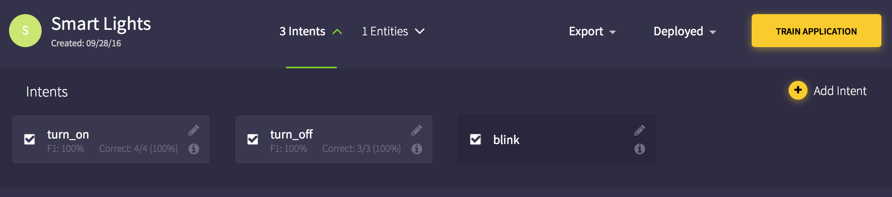

Smart Light Tutorial¶
Table of Contents
Introduction¶
In this tutorial, we will walk you through the entire processes of building a NLU applicaiton that can control lights.
- By the end of this tutorial, you will be able to:
- Create Intents and Entities
- Train your app with test utterances
- Correct identification errors
- Perform endpoint testing
Smart Light Tutorial¶
The following video walks you through the entire process of creating a Smart Light application.
Creating Smart Light Understanding¶
1. Add Intents¶
- Go to NLU and create a new NLU app.
- In the app, click on “Set Up Intents” and add a new intent called turn_on.
- Add the following example utterances:
- Turn on lights
- Lights on
- In the app, click on “Set Up Intents” and add a new intent called turn_off.
- Add the following example utterances:
- Turn off lights
- Lights off
You should now have two intents in your intents dropdown.
2. Add Entities¶
Next, we want our app to identify a specific light.
- Under “Set Up Entities”, add a new entity called name to refer to the names
of the lights.
- Add the following example phrases:
- Kitchen
- Living Room
- Bedroom
You should have one entity in you entities dropdown.
3. Test the App¶
- Test your model in the “Train the model” Section. Input a sentence and click analyze.
- Once it has completed, check the result. You can correct the result by clicking on the blue button and selecting the correct intent or by highlighting and selecting the correct entity. When finished, click submit.
Tip
Try novel light names such as “porch”, “garage”, and “bathroom” to test how the model will behave in novel cases.
4. Building a strobe¶
After we have tested our app, let’s add some more sophisticated actions such as strobing or blink.
- Add a new intent called blink. Don’t add any example utterances yet.

- Add a new entity called color and add the following example phrases:
- Red
- Green
- Yellow
Note
You can add more examples into your phrase list.
- Add the predefined entity number.
You should now have three entities in your entities dropdown.
5. Strobe Test¶
- Test the following sentence in your model:
- Blink the bedroom light 5 times red.
Note
The App may only be able to recognize name and number and not color.
Once it has completed, check the result. You can correct the result by clicking on the blue button and selecting the correct intent or by highlighting the correct and selecting the entity. When finished, click submit.
Tip
Test you app against novel colors.
In addition, test the app against new turn_on/turn_off utterances that contain a color entity.
- Once you are done testing you model, click on Train Model and then Deploy.
Tip
Use the Stats bar and the Log to understand how your models performance.
6. Deploy and Testing the endpoint¶
- Click on Deployed and click on Test Endpoint in the dropdown.
In the pop-up under the Query section, enter in a sentence and click test end point. You should see the following text in the Output section:
An example output for the utterance “Blink the bathroom light 8 times in blue”:
{ "tokenized_sentence": "Blink the bathroom light 8 times in blue", "intents": [ { "score": 0.7512977154761208, "intent": "turn_on" }, { "score": 0.2487022845238792, "intent": "turn_off" }, { "score": 0, "intent": "blink" } ], "entities": [ { "text": "bathroom", "end": 3, "start": 2, "entity": "name" }, { "text": "8", "end": 5, "start": 4, "entity": "number" }, { "text": "blue", "end": 8, "start": 7, "entity": "color" } ], "sentence": "Blink the bathroom light 8 times in blue" }
Once you have finished Endpoint testing, click on Show Log. Note that the examples you just tested do not have User annotations. If the App annotations are correct, click on the Green Thumbs Up.
Note
When you click on the Green Thumbs Up, the App annotations will automatically be apply onto the User annotations.
Warning
If there are contradictions in your training data, your accuracy will decrease dramatically.
Tip
To quickly check performance by intent, click on the i button within the intent to show the stats. In addition, you can use this dropdown to filter the log by each intent.
Click on “Show All Apps” to go back to the NLU app list.
In your newly created apps bubble, click on Deployment Information and copy the Deployment Url onto your clipboard.